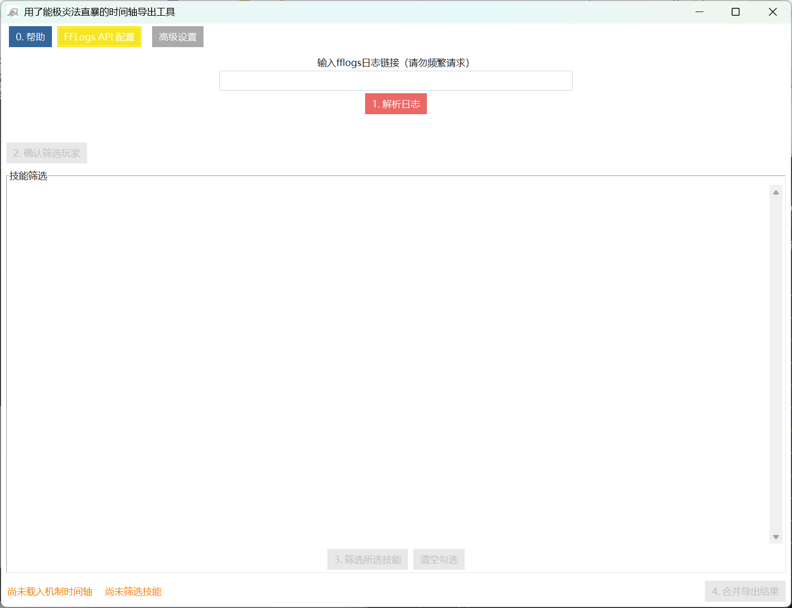
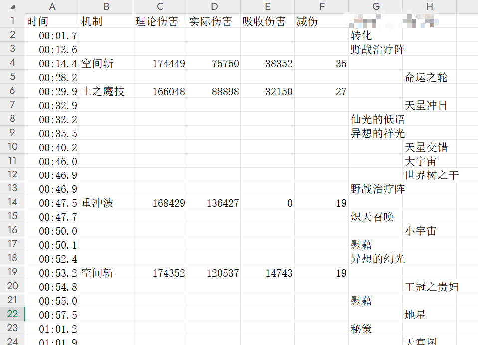
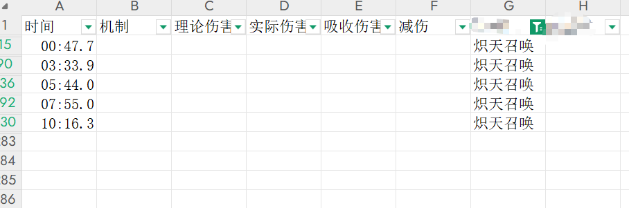
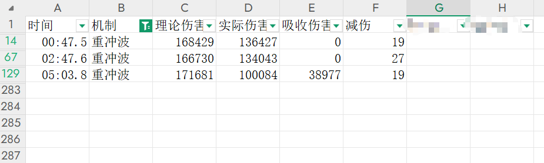
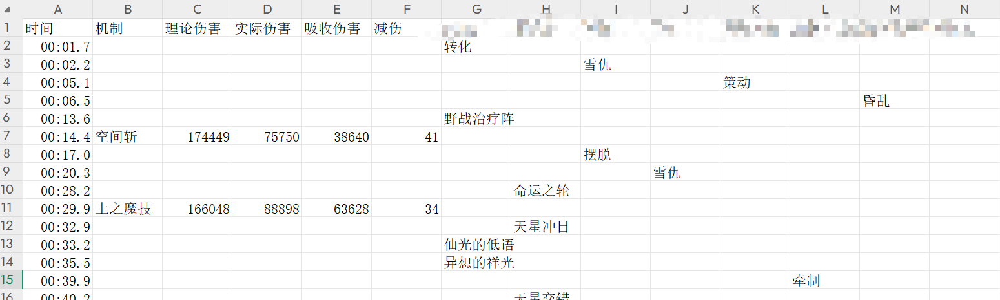
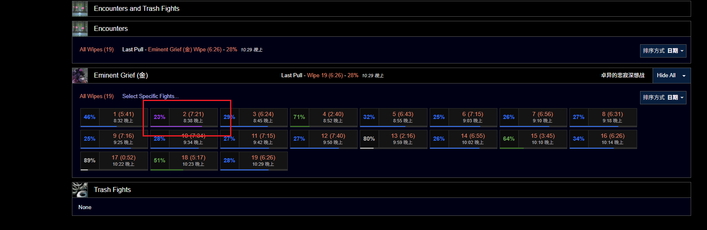
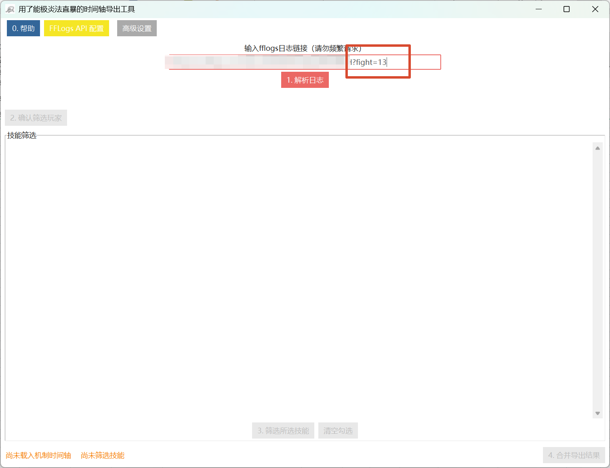
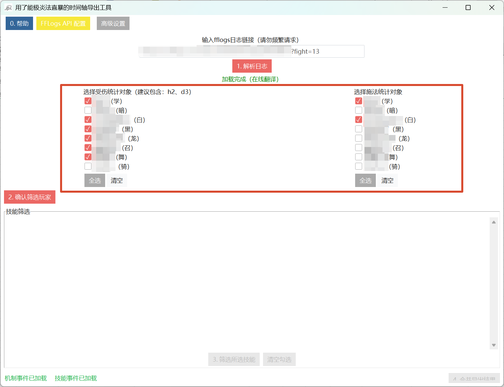
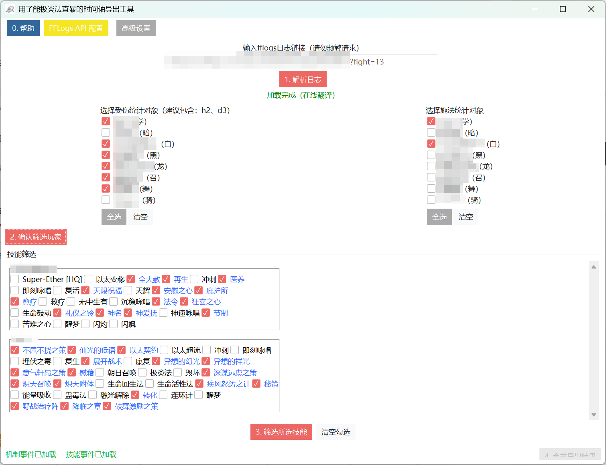
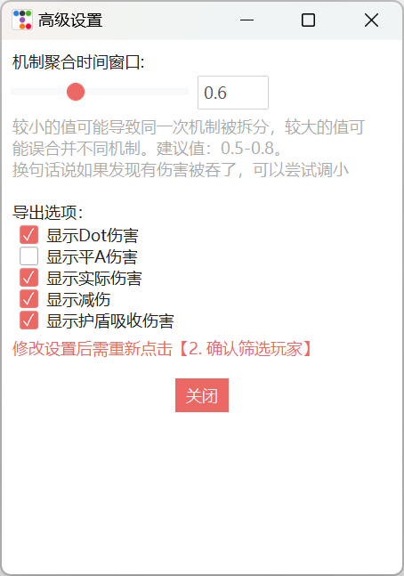

时间轴导出工具 · 使用说明
将 FFLogs 上的机制伤害时间轴与技能施法记录合并导出，便于复盘减伤与排奶轴。
⚠️ 由于可能存在 bug，数据仅供参考，请以 FFLogs 原始数据为准。请勿直接以本工具导出结果作为减伤出警证据。
功能说明
fflogs 上受到伤害和施法是分开的页面，且使用的时间轴不统一，复盘减伤、治疗时很不方便。本工具的作用就是将多个数据源合并，把机制和奶轴并在一起，便于查看。


使用场景
请灵活结合 Excel 技巧使用：
-
快速、方便地检查减伤技能覆盖了哪些地方，易于标注奶轴修改思路，也方便双奶搭档抠轴


-
快速筛选某机制或某技能的时间轴，以便于排轴调整


-
快速查看团减覆盖情况，方便回看队伍减伤

- 只要有过本 logs，可以扒一份粗略的时间轴（注意很粗略），用于排轴或其他用途。
- 其他用途请自行探索，理论上也能辅助 T 职排减伤轴、辅助 DPS 排技能轴，不在此演示。
使用方法
💡 点击工具中的「0. 帮助」可查看操作步骤，按照按钮编号顺序操作即可。
1. 解析日志
- 在 FFLogs 中找到想看的某一场具体战斗（例如选择进度最远的一把），点开后在浏览器复制链接。
- 粘贴到工具的解析日志栏中，点击「1. 解析日志」。
⚠️ 链接内一定要包含
fight= 参数，否则无法解析。

2. 确认筛选玩家
- 左侧（受伤）：勾选用于统计机制伤害的对象。看团血时不建议勾选 T，会把 T 的高额减伤算进去。
- 右侧（施法）：勾选需要导出技能轴的角色。
勾选后点击「2. 确认筛选玩家」。

3. 筛选技能
- 蓝字代表默认勾选项，通常是常用的减伤和治疗技能，也可以自行调整。
- 有技能显示英文代表翻译未完成，正在努力补全翻译中。
- 按需勾选后点击「3. 筛选所选技能」。

4. 合并导出
点击「4. 合并导出结果」，保存文件即可。导出为 CSV，可在 Excel 中进一步筛选、标注。
高级设置

- 机制聚合时间窗口：多长时间内的同名机制被认为是同一次 AOE，用于适配伤害扩散效应带来的判定时间差。建议值 0.5~0.8，默认 0.6，不太明白可以不调。
- 显示 Dot 伤害：是否在导出列表中显示 Dot 类伤害（对部分特殊命名 Dot 无法生效，如绝伊甸 Dot），默认开。
- 显示平A 伤害：是否在导出列表中显示平A/攻击伤害，默认关。
- 显示实际伤害/减伤/护盾吸收伤害：是否在导出列表中显示这些内容，默认开。
⚠️ 修改高级设置后，需重新点击「2. 确认筛选玩家」并依次执行后续步骤，重新导出才能生效。